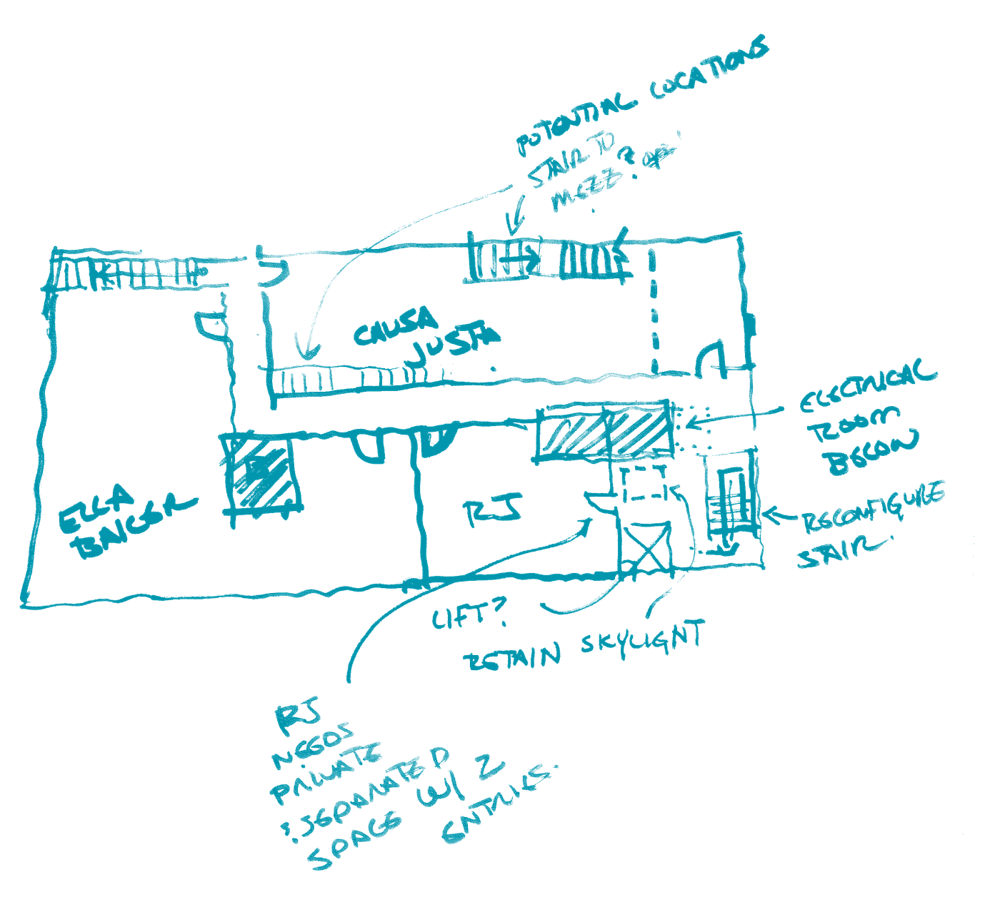
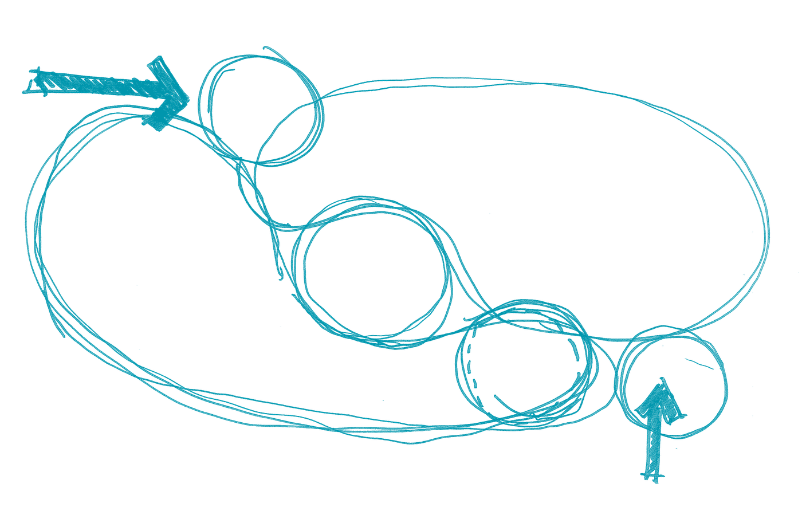

For a decade, Designing Justice + Designing Spaces (DJDS) has partnered with communities most harmed by incarceration and disinvestment
to imagine, design, build, and own spaces rooted in healing instead of punishment. This is the story
of what we've built together — and where we're headed next.
Infrastructure built with — and owned by — community.
$0M+
in buildings, spaces & places created by and for community
0
projects completed nationwide
0
partner organizations
0
community members engaged directly in design
$0M+
in services provided to community-based organizations
0
capacity-building sessions delivered

With gratitude
Community, foundation, and corporate partners who made a decade of this work possible
Partner logo
Partner logo
Partner logo
Partner logo
Partner logo
Partner logo
Partner logo
Partner logo
Partner logo
Partner logo
Partner logo
Partner logo

2016 — 2025
A decade in motion
Scroll to follow the thread
Founding2016
DJDS Founded in Oakland
DJDS begins work inside Bay Area prisons and alongside community organizers, where a critical gap became clear: the communities most impacted by incarceration and disinvestment had no access to — or voice in creating — the healing-centered spaces they deserved. DJDS launches what will become a flagship mobile project, the Pop-Up Village, with a mission to use mobile architecture to turn blighted and/or vacant urban outdoor spaces into beautiful, dynamic, and regenerative community hubs that help under-resourced communities of color get access to the resources they need to thrive.
Restorative Reinvestment2017
Hundreds of Residents Reached
Through the Pop-Up Village, DJDS and community partners serve hundreds of residents.
Re-Entry Spaces2018
Five Keys Mobile Classroom & Women's Mobile Refuge Trailer
Construction is completed on the Five Keys Mobile Classroom — a refurbished MUNI bus transformed into a mobile schoolhouse, complete with classroom space, a library, and computerized learning via a mobile hotspot.
Leadership and Awareness2018
A TED Talk Propels DJDS to an International Stage
DJDS Founder Deanna Van Buren is invited to present a TED talk on what a world without prisons could look like, introducing DJDS's work to a wider audience.
Expansion2019
New Projects and New Places
After increasing national recognition, DJDS work shifted to reentry housing, reentry campus concepts, working with Black churches, and creating the first Mobile Refuge Rooms, and new projects expanded to Atlanta and Detroit. Funding from the Kendeda Fund allowed the purchase of land in Detroit next to the LOVE Building to begin to really build out the DJDS ecosystem of care.
Restorative Reinvestment2019
Restore Oakland
The Restore Oakland building is a permanent home to Bay Area nonprofits that cultivate restorative economics and healing justice. The community hub consists of office spaces, shared amenities and the Peace Room on the top floor, a commercial kitchen and restaurant on the ground floor, and community meeting rooms in the basement.
Leadership and Awareness2020
The Spotlight is on Designing Justice + Designing Spaces
DJDS is featured in The New York Times.
Image: The New York Times
Leadership and Awareness2020
Advocating for Change in a Whole New World
DJDS work begins going upstream by advocating and advising on more policy, including meeting with the LA County Board of Supervisors to speak about the Alternatives to Incarceration report. As the COVID-19 pandemic hit, DJDS grappled with its own restorative practice and what communities really need — programs expanded into new areas, and flipped to online community engagement. As DJDS impact grew, we began rigorous research to share our learnings, creating “Activities for Impact.”
Behavioural Health2020
For the Love of Well-Being
DJDS expands into behavioural health with the FLOW (For The Love of Well-being) Youth Center concept paper.
Expansion2021
Expansion into New Regions and Project Types
DJDS expands into LA and deepens expertise in reentry housing, including Liberty Ecosystem in South Central with our first affordable housing development project, the Barrios Unidos headquarters for workforce development, community spaces, affordable multifamily housing and integrated service spaces, the Burns Institute Safe Healing Centers, and the Robert K. Ross Center for Hope and Healing with affordable housing, full-scale community, and health services to uplift the economic and societal well-being of formerly incarcerated, unhoused, and economically disadvantaged residents.
Specialized Housing2023
Crenshaw Affordable Housing
In the vibrant Leimert Park neighborhood — a historic center for Black culture and artistry in Los Angeles — DJDS supports Liberty Ecosystem, a Black-led community land trust, in developing 56 new units of affordable housing with the creation of Crenshaw Affordable Housing.
Restorative Reinvestment2023
The LOVE Building
Modeling the restorative vision of Restore Oakland, the LOVE Building serves as a sister project in Detroit. This commercial transformation establishes a long-term sanctuary for justice-oriented nonprofits, integrating professional workspaces with versatile community hubs, retail opportunities, and a dining establishment to foster local resilience.
Restorative Reinvestment2023
Career Technical Education (CTE) Hub for Transitional Age Youth (TAY)
Conceived by the very young people it serves, the CTE TAY Hub establishes a comprehensive post-secondary environment in Oakland. This vision integrates specialized vocational training with supportive transitional residences, public gathering areas, and essential holistic care to empower local transition-aged youth.
Restorative Reinvestment2024
Safe Healing Center
In an effort to support the care-based service of helping youth heal from traumatic occurrences in LA County, the newly established Department of Youth Development partners with DJDS to launch initial demonstration projects for a healing-centered, home-like alternative placement for youth called a Safe Healing Center. The initial focus population are girls and gender-expansive youth. This initial site will be operated by the women's reentry organization, A New Way of Life.
Leadership and Awareness2025
Advocating for Change at the Grasstops and Grassroots
DJDS expanded our engagement by partnering “upstream” with agencies and municipalities.
Restorative Reinvestment2025
The Warm Landing Place
Concept design was completed for the Warm Landing Place (WLP) — a pioneering initiative led by the Justice Care & Opportunities Department under LA County's “Care First, Jails Last” vision. WLP will offer short-term transitional housing and essential voluntary services for justice-involved individuals upon release from incarceration.
What's next
“[Placeholder — insert an inspirational quote from Deanna Van Buren here that sets the tone for the next decade of DJDS's work.]”
Deanna Van Buren Founder & Co-Executive Director, DJDS
01
[Future focus area]
[Placeholder — describe the first pillar of DJDS's vision for the next decade, and how funders can support it.]
02
[Future focus area]
[Placeholder — describe the second pillar of DJDS's vision for the next decade, and how funders can support it.]
03
[Future focus area]
[Placeholder — describe the third pillar of DJDS's vision for the next decade, and how funders can support it.]
Join us
Invest in the next decade of healing-centered infrastructure
Every gift, partnership, and referral becomes real, physical space in communities that have too rarely had the chance to design their own. Here's how to be part of what comes next.
Donate
[Placeholder — copy framing giving as an investment in future infrastructure, not a one-time gift.]